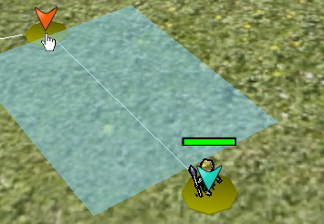
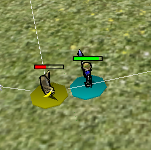

本ゲームはRTS（RealTimeSimulation)と呼ばれるジャンルに属するゲームです。 日本で比較的多い、ターン制で時間が進むゲームではなく、 リアルタイムに時間が進みます。
このジャンルは極めれば面白いですが、初心者には敷居が高い操作を要求します。 ときには、10以上の大量のキャラクタを操り、それぞれ休むことなく指示を出し続けることも。
しかし、本ゲームではそういったことはありません。 操るキャラクタは最大たったの3人。任意のタイミングで時間を止められます。 簡単にするためにほかにもいろいろな工夫をしています。 誰でもできるRTSを作りました。
本ゲームでは、マウスひとつで簡単に操作できます。 移動の仕方も単純で、移動させたいキャラクタをクリックし、移動したいところをクリックするだけ。
戦闘ももちろん簡単。 戦闘させたいキャラクタをクリックし、敵に向けて移動させるだけ。後は、自動的に戦闘が始まります。 面倒な別画面へ移動することも、コマンドを打つ必要もありません。
本ゲームではタイトル通り、敵を挟むことを主とするゲームです。眠っている敵のすきを突き挟むもよし、 賢くない敵をおびき寄せ挟むもよし。 挟むことによる爽快感をぜひ味わってください。
| 挟み前 | 挟み後 |
|---|---|
|
|
| 名前 | 挟みシュミレーション(仮） |
|---|---|
| バージョン | 0.25板 |
| ジャンル | RTS |
| 標準ゲーム終了時間 | 30分～1時間 |
| 標準やりこみゲーム終了時間 | 2時間～3時間 |
| OS | WindowsXP,WindowsVista,Windows7(ただし64ビット環境では未調査) |
|---|---|
| 必要ミドルウェア | .Net Framework3.5,XnaFramework3.1 (本ゲームに必要ミドルウェアは同封） |
| 必要マシンスペック | 2006年標準モデルのパソコン |